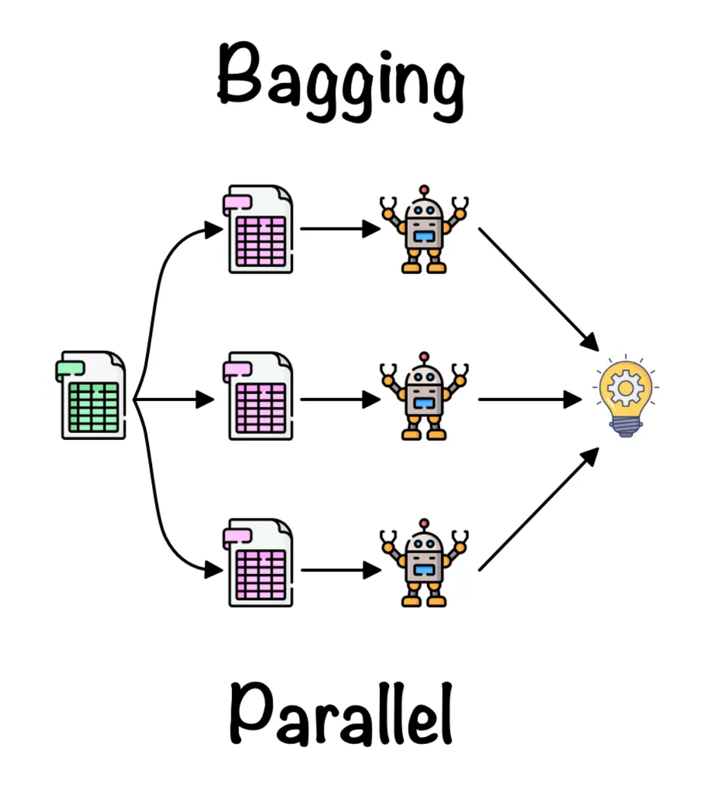
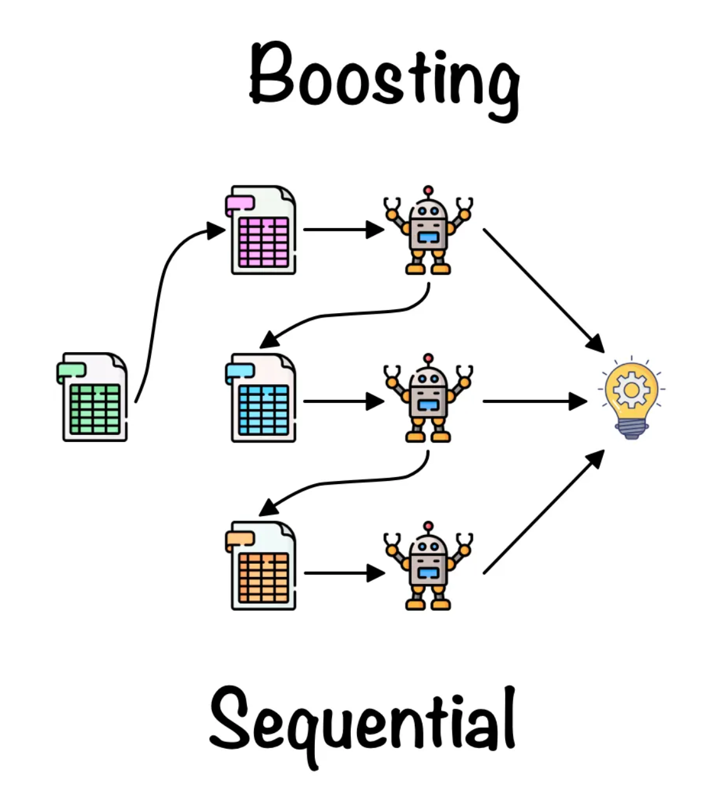

Lecture 10a: Why it helps to combine models
This lecture is about using a mixture of experts to reduce overfitting. The notion is to train lower capacity models specializing on subsets of the data and learn to predict which one would be the best predictor. Then use the best model for prediction. Alternatively we might average the results of the simpler models.
The lecture is challenging as it skims the prior work failing to sufficiently motivate why the different error function arise (they depend on the way the learning scheme are set up) as the paper tries to bridge between competitive learning and a modular neural network.
There’s, again, a lot of math, although it’s less difficult than in videos 9d and 9e. Be sure to understand the formulas before moving on.
We’re going to combine many models, by using the average of their predictions, at test time. 5:38: There’s a mistake in the explanation of why that term disappears.
The mistake is that -2(t-ybar) is not a random variable, so it makes no sense to talk about its variance, mean, correlations, etc.
The real reason why the term disappears is simply that the right half of the term, i.e.i, is zero, because \bar{y} is the mean of the y_i values.
Combining networks: The bias-variance trade-off
- When the amount of training data is limited, we get overfitting.
- Averaging the predictions of many different models is a good way to reduce overfitting.
- It helps most when the models make very different predictions.
- For regression, the squared error can be decomposed into a “bias” term and a “variance” term.
- The bias term is big if the model has too little capacity to fit the data.
- The variance term is big if the model has so much capacity that it is good at fitting the sampling error in each particular training set.
- By averaging away the variance we can use individual models with high capacity. These models have high variance but low bias.
How the combined predictor compares with the individual predictors
- On any one test case, some individual predictors may be better than the combined predictor.
- But different individual predictors will be better on different cases.
- If the individual predictors disagree a lot, the combined predictor is typically better than all of the individual predictors when we average over test cases.
- So we should try to make the individual predictors disagree (without making them much worse individually).
Combining networks reduces variance
We want to compare two expected squared errors: Pick a predictor at random versus use the average of all the predictors:
A picture

- The predictors that are further than average from t make bigger than average squared errors.
- The predictors that are nearer than average to t make smaller then average squared errors.
- The first effect dominates because squares work like that.
- Don’t try averaging if you want to synchronize a bunch of clocks!
- The noise is not Gaussian
\frac{ (\bar{y}+\epsilon)^2 + (\bar{y} + \epsilon )^2}{2} = \bar{y}^2 + \epsilon^2
What about discrete distributions over class labels?
{kind=link}
- Suppose that one model gives the correct label probability and the other model gives it
- Is it better to pick one model at random, or is it better to average the two probabilities?
\log \Biggr( \frac{ p_i + p_j }{2} \Biggr) \ge \frac{\log p_i + \log p_j}{2}
Overview of ways to make predictors differ
- Rely on the learning algorithm getting stuck in different local optima.
- A dubious hack (but worth a try).
- Use lots of different kinds of models, including ones that are not neural networks.
- Decision trees
- Gaussian Process models
- Support Vector Machines
- and many others.
- For neural network models, make them different by using:
- Different numbers of hidden layers.
- Different numbers of units per layer.
- Different types of unit.
- Different types or strengths of weight penalty.
- Different learning algorithms.
Making models differ by changing their training data
 
- Bagging: Train different models on different subsets of the data.
- Bagging gets different training sets by using sampling with replacement: \{a,b,c,d,e\} \to <a, c, c, d, d, \ldots >
- Random forests use lots of different decision trees trained using bagging. They work well.
- We could use bagging with neural nets but its very expensive.
- Boosting: Train a sequence of low capacity models. Weight the training cases differently for each model in the sequence.
- Boosting up-weights cases that previous models got wrong.
- An early use of boosting was with neural nets for MNIST.
- It focused the computational resources on modeling the tricky cases.
Lecture 10b: Mixtures of Experts
- This is a different way of combining multiple models.
- Nearest neighbor is a very simple regression method that’s not a neural network.
- 7:22: The formula is confusing.
- The idea is a weighted average of squared errors (weighted by those probabilities p_i).
- That can be written as an weighted expectation, with weights p_i, of (t-y_i)^2; or as a \sum p_i \times (t-y_i)^2. The formula on the slide mixes those two notations.
On the next slide it’s written correctly.
10:03: This formula is not trivial to find, but if you differentiate and simplify, you will find it.
Mixtures of Experts
- Can we do better that just averaging models in a way that does not depend on the particular training case? – Maybe we can look at the input data for a particular case to help us decide which model to rely on. – This may allow particular models to specialize in a subset of the training cases. – They do not learn on cases for which they are not picked. So they can ignore stuff they are not good at modeling. Hurray for nerds!
- The key idea is to make each expert focus on predicting the right answer for the cases where it is already doing better than the other experts. – This causes specialization. # A spectrum of models
Very local models – e.g. Nearest neighbors - Very fast to fit - Just store training cases - Local smoothing would obviously improve things.
Fully global models - e. g. A polynomial - May be slow to fit and also unstable. - Each parameter depends on all the data. Small changes to data can cause big changes to the fit.
Multiple local models
- Instead of using a single global model or lots of very local models, use several models of intermediate complexity.
- Good if the dataset contains several different regimes which have different relationships between input and output.
- e.g. financial data which depends on the state of the economy.
- Good if the dataset contains several different regimes which have different relationships between input and output.
- But how do we partition the dataset into regimes?
Partitioning based on input alone versus partitioning based on the input-output relationship
- We need to cluster the training cases into subsets, one for each local model.
- The aim of the clustering is NOT to find clusters of similar input vectors.
- We want each cluster to have a relationship between input and output that can be well-modeled by one local model.
A picture of why averaging models during training causes cooperation not specialization
Do we really want to move the output of model i away from the target value?
An error function that encourages cooperation
If we want to encourage cooperation, we compare the average of all the predictors with the target and train to reduce the discrepancy. – This can overfit badly. It makes the model much more powerful than training each predictor separately. E=(t - \lt y_i \gt_i )^2
where:
- y_i is the average over all predictors.
An error function that encourages specialization
- If we want to encourage specialization we compare each predictor separately with the target.
- We also use a “manager” to determine the probability of picking each expert.
- Most experts end up ignoring most targets
E = \lt p_i(t- y_i)^2 \gt_i
where:
- y_i is the avarage over all predictors.
- p_i probability of the manager picking expert i for this case.
The mixture of experts architecture (almost)
A simple cost function 1
E = \sum_i p_i (t- y_i)^2
{kind=link}
The derivatives of the simple cost function
- If we differentiate w.r.t. the outputs of the experts we get a signal for training each expert.
- If we differentiate w.r.t. the outputs of the gating network we get a signal for training the gating net.
- We want to raise p for all experts that give less than the average squared error of all the experts (weighted by p)
p_j = \frac{e^{x_j}}{\sum_i e^x_i}
E = \sum_i p_i (t- y_i)^2 \tag{1}
\frac{\partial E}{\partial y_i} = p_i(t-y_i) \tag{2}
\frac{\partial E}{\partial x_i} = p_i\Bigg((t-y_i)^2-E\Bigg) \tag{3}
A better cost function for mixtures of experts (Jacobs et al. 1991)
{kind=link}
{kind=link}
- Think of each expert as making a prediction that is a Gaussian distribution around its output (with variance 1).
- Think of the manager as deciding on a scale for each of these Gaussians. The scale is called a “mixing proportion”. e.g {0.4 0.6}
- Maximize the log probability of the target value under this mixture of Gaussians model i.e. the sum of the two scaled Gaussians.
The probability of the target under a mixture of Gaussians
p(t^c | MoE) = \sum_i p_i^c {\color{red}\frac{1}{\sqrt{2\pi}}} e^−\frac{1}{2} (t^c−y_i^c )^2 \tag{4}
where:
- lhs - prob. of target value on case c given the mixture.
- MoE — Mixture of Experts
- y_i = output of expert i
- the constant in red - normalization term for a Gaussian with \sigma^2=1
Lecture 10c: The idea of full Bayesian learning
In this video you learn what exactly we want to do with that difficult-to-compute posterior distribution.
We learn about doing which is so time-consuming that we can never do it for normal-size neural networks. This is a theory video.
We average the predictions from many weight vectors on test data, with averaging weights coming from the posterior over weight vectors given the training data.
That sounds simple and is indeed, in a sense, what happens.
However, there’s more to be said about what this “averaging” entails.
The Bayesian approach is all about probabilities, so the idea of producing a single number as output has no place in the Bayesian approach.
Instead, the output is a distribution, indicating how likely the net considers every possible output value to be.
In video 9e we introduced the idea that the scalar output from a network really is the mean of such a predictive distribution. We need that idea again here.
That is what Geoffrey means at 6:37. “Adding noise to the output” is a way of saying that the output is simply the centre of a predictive distribution.
What’s averaged is those distributions: the predictive distribution of the Bayesian approach is the weighted mean of all those Gaussian predictive distributions of the various weight vectors.
By the way, the result of this averaging of many such Gaussian distributions is not a Gaussian distribution.
However, if we’re only interested in the mean of the predictive distribution (which would not be very
Bayesian in spirit), then we can simply average the outputs of the networks to get that mean. You can mathematically verify this for yourself.
Full Bayesian Learning
- Instead of trying to find the best single setting of the parameters (as in Maximum Likelihood or MAP) compute the full posterior distribution over all possible parameter settings.
- This is extremely computationally intensive for all but the simplest models (its feasible for a biased coin).
- To make predictions, let each different setting of the parameters make its own prediction and then combine all these predictions by weighting each of them by the posterior probability of that setting of the parameters.
- This is also very computationally intensive.
- The full Bayesian approach allows us to use complicated models even when we do not have much data.
Overfitting: A frequentist illusion?
- If you do not have much data, you should use a simple model, because a complex one will overfit.
- This is true.
- But only if you assume that fitting a model means choosing a single best setting of the parameters.
- If you use the full posterior distribution over parameter settings, overfitting disappears.
- When there is very little data, you get very vague predictions because many different parameters settings have significant posterior probability
A classic example of overfitting

{kind=link}
- Which model do you believe?
- The complicated model fits the data better.
- But it is not economical and it makes silly predictions.
- But what if we start with a reasonable prior over all fifth-order polynomials and use the full posterior distribution.
- Now we get vague and sensible predictions.
- There is no reason why the amount of data should influence our prior beliefs about the complexity of the model.
Approximating full Bayesian learning in a neural net
- If the neural net only has a few parameters we could put a grid over the parameter space and evaluate p( W | D ) at each grid-point.
- This is expensive, but it does not involve any gradient descent and there are no local optimum issues.
- After evaluating each grid point we use all of them to make predictions on test data
- This is also expensive, but it works much better than ML learning when the posterior is vague or multimodal (this happens when data is scarce).
p(t_{test} \mid \text{input}_{test}) = \sum_{g \in grid} p(W_g \mid D) p(t_{test} \mid \text{input}_{test}, W_g ) \tag{5}
An example of full Bayesian learning
{kind=link}
- Allow each of the 6 weights or biases to have the 9 possible values -2,\ -1.5,\ -1,\ -0.5,\ 0,\ 0.5,\ 1,\ 1.5,\ 2
- There are 9^6 grid-points in parameter space
- For each grid-point compute the probability of the observed outputs of all the training cases.
- Multiply the prior for each grid-point by the likelihood term and renormalize to get the posterior probability for each grid-point.
- Make predictions by using the posterior probabilities to average the predictions made by the different grid-points.
Lecture 10d: Making full Bayesian learning practical
Maximum Likelihood is the least Bayesian.
Maximum A Posteriori (i.e. using weight decay) is slightly more Bayesian.
This video introduces a feasible method that’s even closer to the Bayesian ideal. However, it’s necessarily still an approximation.
4:22: “save the weights” means recording the current weight vector as a sampled weight vector.
What can we do if there are too many parameters for a grid?
- The number of grid points is exponential in the number of parameters.
- So we cannot deal with more than a few parameters using a grid.
- If there is enough data to make most parameter vectors very unlikely, only a tiny fraction of the grid points make a significant contribution to the predictions.
- Maybe we can just evaluate this tiny fraction
- Idea: 💡 It might be good enough to just sample weight vectors according to their posterior probabilities.
p(y_{test} \mid \text{input}_{test},D) = \sum_{i} {\color{green}{ p(W_i \mid D)}} p(y_{test} \mid \text{input}_{test}, W_i )
where:
- the green term - Sample weight vectors with this probability
Sampling weight vectors
- In standard backpropagation we keep moving the weights in the direction that decreases the cost.
- i.e. the direction that increases the log likelihood plus the log prior, summed over all training cases.
- Eventually, the weights settle into a local minimum or get stuck on a plateau or just move so slowly that we run out of patience.
One method for sampling weight vectors
- Suppose we add some Gaussian noise to the weight vector after each update.
- So the weight vector never settles down.
- It keeps wandering around, but it tends to prefer low cost regions of the weight space.
- Can we say anything about how often it will visit each possible setting of the weights?
The wonderful property of Markov Chain Monte Carlo
- Amazing fact: If we use just the right amount of noise, and if we let the weight vector wander around for long enough before we take a sample, we will get an unbiased sample from the true posterior over weight vectors.
- This is called a “Markov Chain Monte Carlo” method.
- MCMC makes it feasible to use full Bayesian learning with thousands of parameters.
- There are related MCMC methods that are more complicated but more efficient:
- We don’t need to let the weights wander around for so long before we get samples from the posterior.
Full Bayesian learning with mini-batches
- If we compute the gradient of the cost function on a random mini-batch we will get an unbiased estimate with sampling noise.
- Maybe we can use the sampling noise to provide the noise that an MCMC method needs!
- In (Ahn, Korattikara, and Welling 2012) 2 the authors showed how to do this fairly efficiently.
- So full Bayesian learning is now possible with lots of parameters.
Lecture 10e: Dropout
This is not Bayesian. This is a specific way of adding noise (that idea was introduced in general in video 9c). It’s a recent discovery and it works very, very well.
Dropout can be viewed in different ways:
One way to view this method is that we add noise.
Another more complicated way, which is introduced first in the video, is about weight sharing and different models.
That second way to view it serves as the explanation of why adding noise works so well.
The first slide in other words: a mixture of models involves taking the arithmetic mean (a.k.a. “the mean”) of the outputs, while a product of models involves taking the geometric mean of the outputs, which is a different kind of mean.
Two ways to average models
- MIXTURE: We can combine models by averaging their output probabilities:
Model A: .3 .2 .5 Model B: .1 .8 .1 Combined .2 .5 .3
- PRODUCT: We can combine models by taking the geometric means of their output probabilities:
Model A: .3 .2 .5 Model B: .1 .8 .1 Combined .03 .16 .05 /sum
Dropout: An efficient way to average many large neural nets
TODO add picture
- Consider a neural net with one hidden layer.
- Each time we present a training example, we randomly omit each hidden unit with probability 0.5.
- So we are randomly sampling from 2^H different architectures. – All architectures share weights
Dropout as a form of model averaging
We sample from 2^H models. So only a few of the models ever get trained, and they only get one training example.
- This is as extreme as bagging can get.
The sharing of the weights means that every model is very strongly regularized.
- It’s a much better regularizer than L2 or L1 penalties that pull the weights towards zero.
But what do we do at test time?
We could sample many different architectures and take the geometric mean of their output distributions.
It better to use all of the hidden units, but to halve their outgoing weights.
- This exactly computes the geometric mean of the predictions of all 2^H models.
What about the input layer?
- It helps to use dropout there too, but with a higher probability of keeping an input unit.
- This trick is already used by the denoising autoencoders developed by Pascal Vincent, Hugo Larochelle and Yoshua Bengio.
How well does dropout work?
- The record breaking object recognition net developed by Alex Krizhevsky (see lecture 5) uses dropout and it helps a lot.
- If your deep neural net is significantly overfitting, dropout will usually reduce the number of errors by a lot.
- Any net that uses “early stopping” can do better by using dropout (at the cost of taking quite a lot longer to train).
- If your deep neural net is not overfitting you should be using a bigger one!
Another way to think about dropout
- If a hidden unit knows which other hidden units are present, it can co-adapt to them on the training data.
- But complex co-adaptations are likely to go wrong on new test data.
- Big, complex conspiracies are not robust.
- If a hidden unit has to work well with combinatorially many sets of co-workers, it is more likely to do something that is individually useful.
- But it will also tend to do something that is marginally useful given what its co-workers achieve.
References
Footnotes
Reuse
Citation
@online{bochman2017,
author = {Bochman, Oren},
title = {Deep {Neural} {Networks} - {Notes} for {Lesson} 10},
date = {2017-10-01},
url = {https://orenbochman.github.io/blog//notes/dnn/dnn-10/l_10.html},
langid = {en}
}